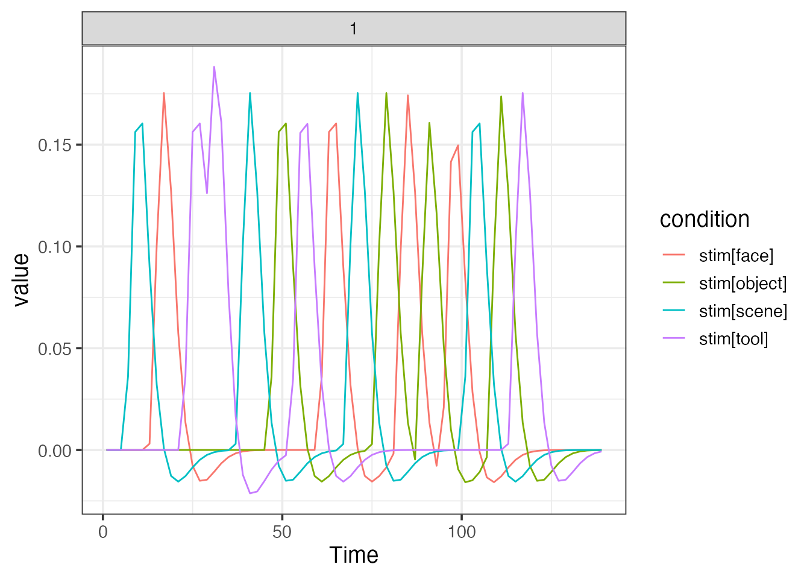
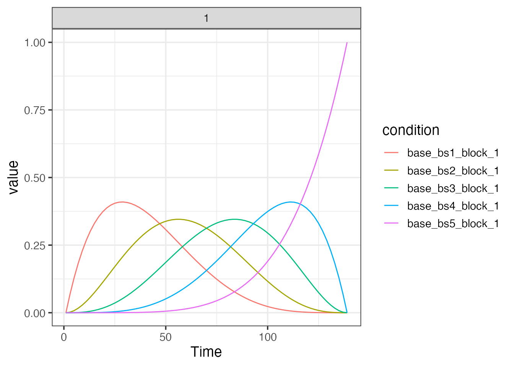

vignettes/a_06_afni.Rmd
a_06_afni.RmdAFNI and other fMRI analysis packages have robust and efficient methods for estimating voxelwise regression models. Therefore, it may be beneficial to construct a regression model in R using fmrireg and translate it so that it can be executed using one of these packages. Here we provide a translation mechanism from an fmri_model object constructed with fmrireg to syntax and assocaited file required for execution using AFNI’s 3dDeconvolve program.
Lets begin again with a simple fMRI design.
cond <- c("face", "scene", "tool", "object") NSTIM <- length(cond)*4 simple_design <- data.frame(stim=factor(sample(rep(cond, 4))), ISI=sample(4:7, NSTIM, replace=TRUE), run=rep(1, NSTIM), trial=factor(1:NSTIM))
Now we add onset information, construct a sampling_frame, create a contrast, and then an event_model:
simple_design$onset <- cumsum(simple_design$ISI+2) -2 sframe <- sampling_frame(blocklens=70, TR=2) con1 <- pair_contrast(~ stim == "face", ~stim == "scene", name="face_scene") emodel <- event_model(onset ~ hrf(stim, contrasts=con1), data=simple_design, block = ~ run, sampling_frame=sframe)
## Warning: The `x` argument of `as_tibble.matrix()` must have unique column names if `.name_repair` is omitted as of tibble 2.0.0.
## Using compatibility `.name_repair`.
## This warning is displayed once every 8 hours.
## Call `lifecycle::last_warnings()` to see where this warning was generated.plot(emodel)

We construct a baseline_model using a B-spline basis:
bmodel <- baseline_model(basis="bs", degree=5, sframe=sframe)
## [1] "baseline_bs_5 : matrix"print(bmodel)
## baseline_model
## name: baseline_bs_5
## basis type: bs
## degree: 5
## drift columns: 5
## constant columns: 1
## nuisance columns: 0
## total columns: 6
## design_matrix:
## # A tibble: 70 x 6
## constant_global base_bs1_block_1 base_bs2_block_1 base_bs3_block_1
## <dbl> <dbl> <dbl> <dbl>
## 1 1 0 0 0
## 2 1 0.0684 0.00201 0.0000296
## 3 1 0.129 0.00769 0.000230
## 4 1 0.182 0.0165 0.000752
## 5 1 0.228 0.0281 0.00173
## 6 1 0.268 0.0419 0.00327
## 7 1 0.302 0.0576 0.00548
## 8 1 0.331 0.0747 0.00843
## 9 1 0.354 0.0929 0.0122
## 10 1 0.373 0.112 0.0168
## # … with 60 more rows, and 2 more variables: base_bs4_block_1 <dbl>,
## # base_bs5_block_1 <dbl>plot(bmodel)

We construct an fmri_model:
fmodel <- fmri_model(emodel, bmodel)
Now we need to specify the data that the model will be estimated on. Let us pretend that we have a single 4d NIfTI file called “scan01.nii” and a mask file called “mask.nii”.
dset <- fmri_dataset(scans="scan01.nii", mask="mask.nii", TR=2, run_length=70, event_table=simple_design, base_path=".")
We are now ready to construct an AFNI model specification. Note that all contrasts in the model will automatically be converted to AFNI-style general linear tests (GLTs).
## AFNI linear model via 3dDeconvolve
## working_dir: .
## number of GLTs: 1
## command line:
## 3dDeconvolve -input ././scan01.nii -mask ./mask.nii -polort -1 -global_times -num_stimts 4 -num_glt 1 -stim_file 1 stim#face_reg.1D -stim_file 2 stim#object_reg.1D -stim_file 3 stim#scene_reg.1D -stim_file 4 stim#tool_reg.1D -stim_label 1 stim#face -stim_label 2 stim#object -stim_label 3 stim#scene -stim_label 4 stim#tool -ortvec constant_1.1D constant_1 -ortvec baseline_bs_5_1.1D baseline_bs_5_1 -TR_times 1 -gltsym GLT_face_scene.txt -glt_label 1 GLT_face_scene -nofullf_atall -tout -cbucket coefout -bucket statout -jobs 1 -floatAlso, note that since we include a set of b-spline nuisance parameters in our model, polort is set to have no baseline regressors (polort = -1). We change that if we like:
## AFNI linear model via 3dDeconvolve
## working_dir: .
## number of GLTs: 1
## command line:
## 3dDeconvolve -input ././scan01.nii -mask ./mask.nii -polort 2 -global_times -num_stimts 4 -num_glt 1 -stim_file 1 stim#face_reg.1D -stim_file 2 stim#object_reg.1D -stim_file 3 stim#scene_reg.1D -stim_file 4 stim#tool_reg.1D -stim_label 1 stim#face -stim_label 2 stim#object -stim_label 3 stim#scene -stim_label 4 stim#tool -ortvec constant_1.1D constant_1 -ortvec baseline_bs_5_1.1D baseline_bs_5_1 -TR_times 1 -gltsym GLT_face_scene.txt -glt_label 1 GLT_face_scene -nofullf_atall -tout -cbucket coefout -bucket statout -jobs 1 -floatBut this would essentially add two sets of drift regressors, which would be bad.
To send other options to the 3dDeconvolve command we can add them to the options argument, e.g.
## AFNI linear model via 3dDeconvolve
## working_dir: .
## number of GLTs: 1
## command line:
## 3dDeconvolve -input ././scan01.nii -mask ./mask.nii -polort -1 -global_times -num_stimts 4 -num_glt 1 -stim_file 1 stim#face_reg.1D -stim_file 2 stim#object_reg.1D -stim_file 3 stim#scene_reg.1D -stim_file 4 stim#tool_reg.1D -stim_label 1 stim#face -stim_label 2 stim#object -stim_label 3 stim#scene -stim_label 4 stim#tool -ortvec constant_1.1D constant_1 -ortvec baseline_bs_5_1.1D baseline_bs_5_1 -TR_times 1 -gltsym GLT_face_scene.txt -glt_label 1 GLT_face_scene -nofullf_atall -cbucket coefout -bucket statout -jobs 1 -floatTo execute the external 3dDeconvolve command on the system, we do as follows:
#run(alm, outdir="glm_out")